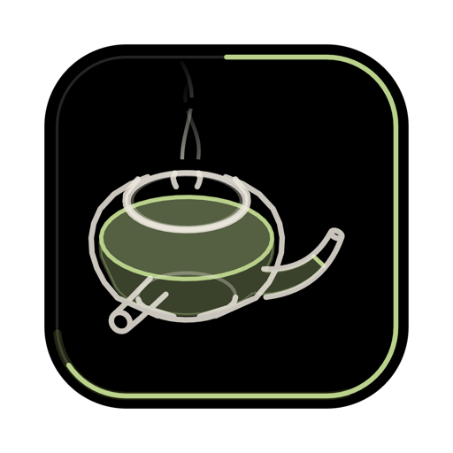
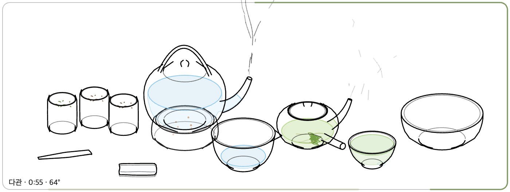

찻자리모니터 구석에 띄워 두는 라인 드로잉 다도
안내도 타이머도 없어요. 직접 집고, 붓고, 기다리는 작은 찻자리.
창 테두리가 온도계예요. 우리는 동안엔 찻물색으로 차올라요.
무료예요. 설치 파일 하나로 끝나고, 관리자 권한도 필요 없어요.
개인이 만든 프로그램이라 처음 한 번은 운영체제가 확인을 물어요. 아래대로 하면 다음부터는 바로 열려요.
기본은 불친절해요. 무엇을 할지는 직접 정해요. 막히면 위젯의 책 아이콘과 ? 아이콘을 열어 보세요.
| 들기 | 다구를 누른 채 끌어요. 놓으면 제자리로 돌아가요. |
| 기울여 따르기 | 든 채로 마우스 휠을 굴려요. 아래로 굴리면 더 기울고, 위로 굴리면 세워져요. 놓을 때까지 그 각도를 유지해요. 트랙패드는 두 손가락으로 위아래로 쓸어요. |
| 찻잎 넣기 | 차시를 차통(녹차 · 홍차 · 보이차)에 담갔다가 다관 위에서 기울여요. |
| 뚜껑 | 다관 위에서 놓으면 덮여요. 덮으면 덜 식어요. |
| 마시기 | 찻잔을 든 채 휠을 굴려요. 70°가 넘으면 앗 뜨거워요. |
| 잎 버리기 | 빈 다관을 퇴수기 위에서 크게 기울여요. |
| 흘린 물 · 잎 | 차건으로 탁자를 문질러 닦아요. 젖은 차건은 퇴수기 위로 들어 올려 휠로 짜요. 흘린 물은 그냥 둬도 천천히 말라요. |
| 퇴수기 비우기 | 퇴수기를 들고 창 오른쪽 끝 너머로 가져가서 기울여요. |
위 가운데에서 시계 방향으로 차올라요. 든 그릇이나 마우스를 올린 그릇의 온도를 보여 주고, 작은 눈금이 그 차의 알맞은 온도예요. 다관에서 차가 우러나는 동안에는 찻물색으로 진하기를 보여 줘요. 옅은 띠가 ‘알맞음’이에요. 숫자는 왼쪽 아래 한 줄에만 나와요.
75°쯤. 끓는 물을 숙우에 따라 한 김 식혀서 붓고 1분.
95° 넘게. 끓는 물을 바로 붓고 뚜껑을 덮어 2분 30초.
98°. 한 번 붓고 바로 버려 씻은 뒤(세차), 다시 붓고 20초.
다 마시면 오른쪽 아래에 맛과 조언이 한 줄 나와요. 숫자는 말하지 않아요. 우리는 동안 창을 가려 둬도 시간은 그대로 흘러요.
마우스를 올리면 오른쪽 위에 작은 아이콘이 나타나요.
| 이동 | 잡고 끌어서 창을 옮겨요. 검정 배경에서는 빈 곳을 끌어도 돼요. |
| 다도 가이드 | 차마다 순서가 있어요. 따라 하면 단계가 저절로 체크돼요. |
| ?조작법 | 손으로 하는 방법을 짧게 보여 줘요. |
| 배경 | 검정 ↔ 투명. 투명이면 바탕화면 위에 검은 선만 남아요. 다구 위가 아니면 클릭이 뒤 창으로 지나가고, 창 가장자리를 잡으면 옮겨져요. |
| 항상 위 | 다른 창 위에 늘 떠 있게 고정하거나 풀어요. |
| M크기 | S · M · L 세 가지 크기예요. |
| 닫기 | 찻자리를 끝내요. Esc는 잠깐 숨기기예요(창을 보고 있을 때만). |

검정 모드를 그대로 뒤집은 모습이에요. 음영 없이 찐한 검은 선만 남고, 물과 찻물 색은 그대로예요. 밝은 바탕화면 위에 조용히 얹어 두기 좋아요.
일하다 잠깐 마음을 가라앉히려고 만들었어요.
모니터 구성이 바뀌어 화면 밖에 있었다면, 다시 열 때 오른쪽 아래 기본 자리로 돌아와요. Esc로 숨겼다면 작업 표시줄이나 Dock에서 찻자리를 눌러요.
다구를 누른 채로(손에 든 상태에서) 휠을 굴려야 해요. 손을 떼면 제자리로 돌아가요.
내려받는 중에 파일이 깨졌을 수 있어요. 다시 내려받아 설치해 보세요. 그래도 같다면 위의 Mac 설치 방법 3번(그래도 열기)을 확인해요.
이 페이지에서 다시 내려받아 설치하면 돼요. 설정과 창 위치는 그대로 남아요.
Windows는 설정 › 앱 › 설치된 앱 › 찻자리 › 제거. Mac은 응용 프로그램 폴더의 Chajari를 휴지통으로 옮겨요.